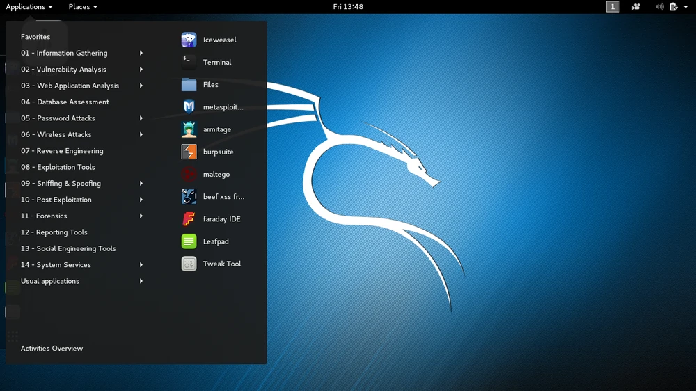

[ SYSTEM PAUSED ]
Press any key to initiate secure boot sequence...
[ SYSTEM PAUSED ]
Press any key to initiate secure boot sequence...
Kali Linux is a powerful, Debian-based operating system built for cybersecurity professionals and ethical hackers. It comes pre-installed with hundreds of great tools for things like penetration testing, digital forensics, reverse engineering and so much more!
So whether you're scanning networks with Nmap, capturing packets with Wireshark, or simulating attacks with Metasploit, Kali is the ultimate playground for learning and practicing cybersecurity and ethical hacking.
Kali Linux is used by penetration testers to assess the security of networks, by forensic analysts to investigate cybercrime, and by educators to train the next generation of cybersecurity professionals.
Examples include ethical hacking competitions, security audits, malware analysis, and red team simulations.
Join the discussion! Share tips, ask for help, or collaborate on security challenges in our interactive community forum.
Put your Kali Linux knowledge to the test with our interactive quizzes. Great for learners and professionals brushing up on skills.